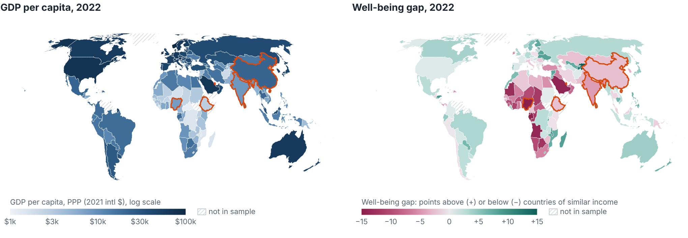
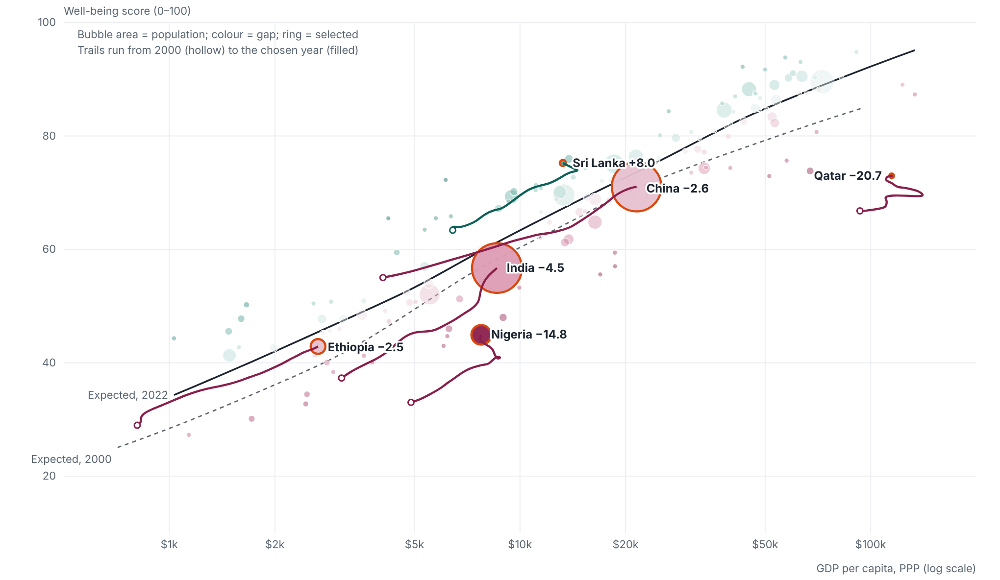
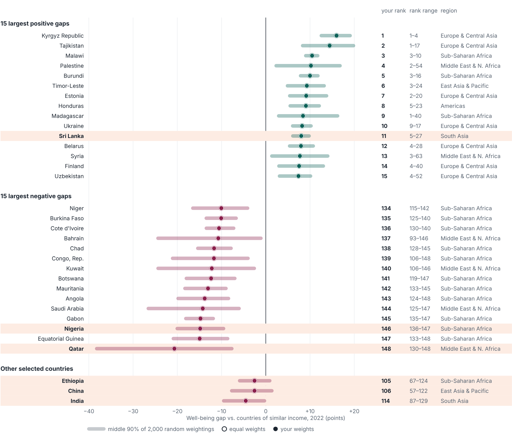
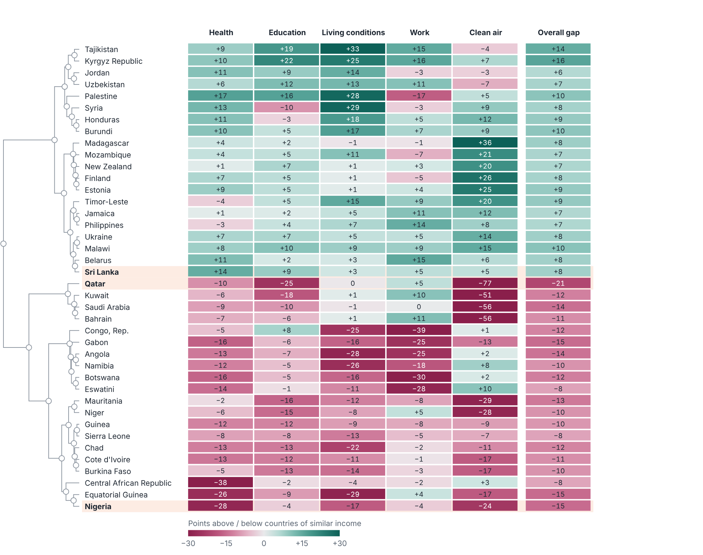
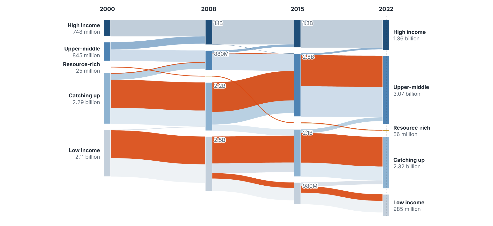

Does a country's income tell us how well its people live? 148 countries, 2000–2022. Luyu Su & Yifan Zuo · STATS 401 · yyiffann.github.io/stats401-final-project
GDP per person is the default yardstick of progress, but says little about health, schooling, services, work and clean air.
Key measure: the well-being gap = well-being score minus the score expected at that income.
gap range 2022, Kyrgyz Republic to Qatar
expected score at $2,000, 2000 → 2022
“catching up” countries reached upper-middle
people in the lowest profile, 2000 → 2022


Year slider animates both; brush on the plot selects groups; selection is shared across all views.



Gulf states lose on clean air and education; African resource exporters on health, living conditions and work.